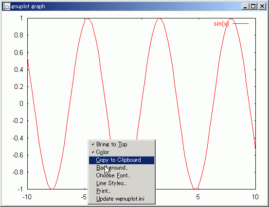
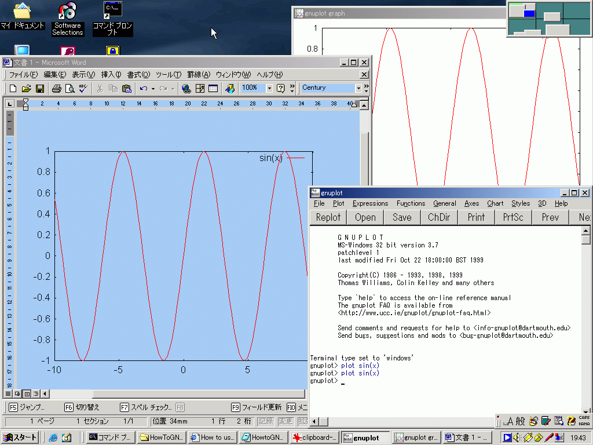

GNUPLOTのマウスモードを解除し （グラフ表示ウィンドウ内で 'm' を押す）グラフ表示ウィンドウ内で右クリックすると、メニューバーが現れる。
その中の"Copy to Clipboard"を選択すると画面に現在表示中のグラフがそのままクリップボードに取り込まれる。

あとはほかのアプリケーションで、クリップボードから取り込めばよい。
次のデスクトップの例は、MS-Word に取り込んだ場面である。(1024x768表示のデスクトップ全体)

ここに、考察したことやプログラムリストも添えれば、レポートが完成する。